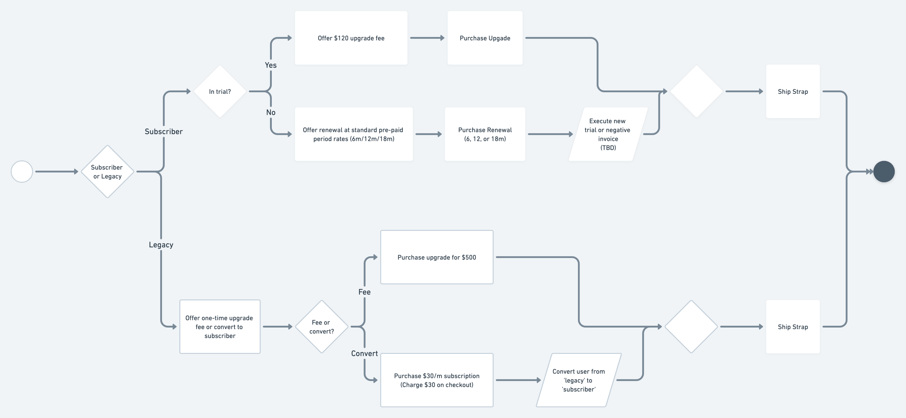

Creating the WHOOP Membership
A bit of background
In 2017, WHOOP was faced with a growth challenge. WHOOP had been selling the “WHOOP Band” to consumers via a Shopify site for $500 per unit. The vast majority of initial customers were either elite endurance athletes or athletes competing at the collegiate/professional level. These early customers also displayed early adopter tendencies. Many of their purchase decisions came from wanting the latest and greatest. They were passionate about their space and new products within it.
$500 is steep for any wearable. General consumers were shy to buy. Growth was slow as a result.
⭐
This is a story about using insights to help drive a major strategic pivot, building an experience from a cross-functional conceptual vision, and then refining that experience over time.
The results of the pivot ended up becoming transformative to the business. Since then sales have dramatically improved by triple digit percentages year over year.
Insight #1: The product was delivering long-lasting value
Consumers used the WHOOP product consistently for long periods of time. Over 80% of those that used WHOOP weekly also used WHOOP daily. This level of performance had been sustained for years since the product had been sold to consumers.
From user interviews, we learned that there was a loyal, passionate customer base. Our favorite anecdote to reference was that for many customers WHOOP become the first app they opened in the morning. This is no easy feat against the likes of Instagram, Gmail, etc.
Insight #2: The WHOOP band felt like a bad deal at $500.
At this point, consumers had been purchasing the “WHOOP Band”. Our research showed that since the focus of the sale was on the band, consumers would naturally want to compare WHOOP hardware to other wearables (e.g. Apple Watch, Garmin, Fitbit, etc). These other hardware products were less expensive and had more features.
Insight #3: Downstream consumers felt alienated by the WHOOP brand
The early brand identity was positioned for elite fitness enthusiasts and athletes. You would find images of Michael Phelps and LeBron James throughout whoop.com as well as keywords such as “Human Performance”, “Athlete”, and “Elite”. Testimonials came from the NCAA, Olympians, the MLB, etc. Consumers with general health and fitness desires would cite reactions such as “Wow, this is cool, but it’s over my head”.
Result? A pivot to a WHOOP subscription and a brand refresh
Product stickiness was strong, however growth faced headwinds due to the brand, product positioning, and price point. WHOOP aimed to maintain its premium brand position and price point. A subscription-based business model allowed the company to lower the barrier to entry while leveraging the previously strong retention performance.
Challenge #1: How to position the subscription model
The product and design challenge was figuring out how to position the subscription model. Not only was “subscription” a dirty word at this point, but a consumer subscription that involved hardware was pretty rare. What are you actually subscribing to? Are you renting the hardware? How can we cover costs? Should there be a hardware fee?
The answer lied in what differentiates the WHOOP product from others, which is the analytics and insights. From this, the “WHOOP Membership” was born, which shifted the focus of the product’s main value to the app experience, instead of the hardware. In fact, the hardware was positioned as being included in the membership subscription; no additional fee. Elevating the analytics and insights, which is what kept members using the product, created the differentiation needed to make the premium price point ($30/month) make sense to consumers.
üí°
This paradigm shift set the context that informed how marketing and product teams built experiences.
Upon reflecting on this process, the win from a design standpoint was how the business leveraged consumer insights from continuous discovery to make a bold bet on repositioning the brand and product strategy.
Challenge #2: How to present the membership
Next we needed to determine how consumers would actually purchase their WHOOP membership. The resulting property was known as the “join flow”. We landed on a set of assumptions and principles to mold its design strategy:
- Make consumers feel like they were “joining WHOOP” by purchasing a membership.
- The novelty of “included hardware” was likely to be confusing.
- Build user account creation into the purchase flow to link billing information. This was critical in preventing fraud, covering hardware costs, and avoiding the 30% “Apple Tax.”
- Allow the purchasing of gift memberships.
- Make the process of signing up exciting. WHOOP is a premium brand that attracts aspirational consumers.
Here are a few initial wires/concepts:
Initial join.whoop.com design concepts
After iterating on the UX, we realized the best part of the experience was where you could choose a band material/color. This was the first touch point where a consumer could personalize their experience. We thought this would actually make for a great hook and decided to make it the first step. The observation was that if consumers felt more connected to the product by customizing it, then they would be more likely to join. It’s always eye opening how quickly you can discover a key insight from a modest set of user studies.
Here is where we landed for an initial MVP:
The initial join.whoop.com acquisition experience
Continuously improving and extending the acquisition funnel over time
We continued iterating on the experience to improve conversion rate and to add features such as additional membership options, accessory sales, localization support, discounting, etc. As we added new steps and options, we needed to ensure the experience remained simple and engaging since member acquisition (i.e. conversion rate) was the most important metric to build toward.
Iterations on the join.whoop.com experience
Additionally, we leveraged this property and extended it to support hardware upgrades for existing members. For example, when WHOOP released a new hardware generation (e.g. WHOOP 4.0), members could acquire the new hardware via this flow. The work included planning the flow logic and architecture based on the various upgrade paths and use cases.

WHOOP membership upgrade logic (View diagram in Whimsical).
Check out the latest iteration
View join.whoop.com to view the latest